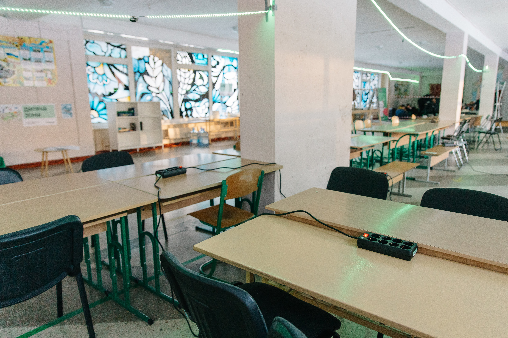
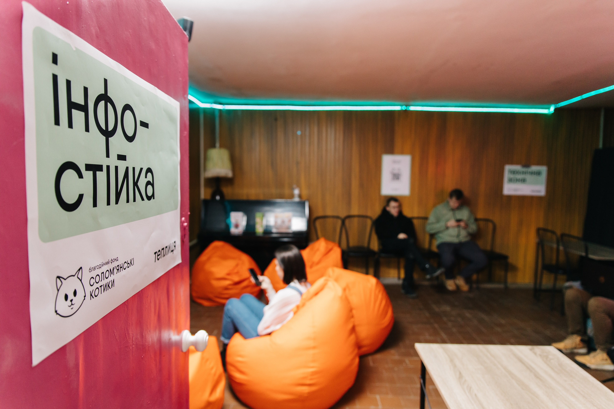
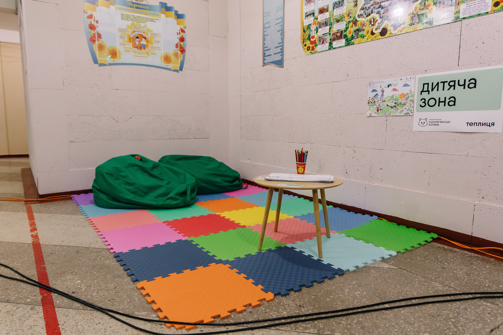
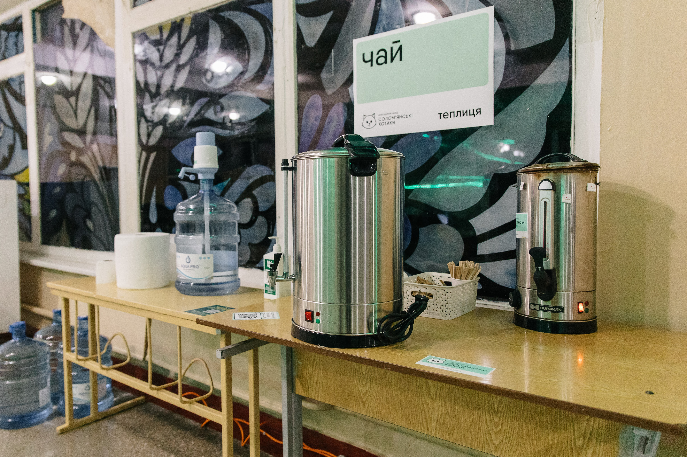
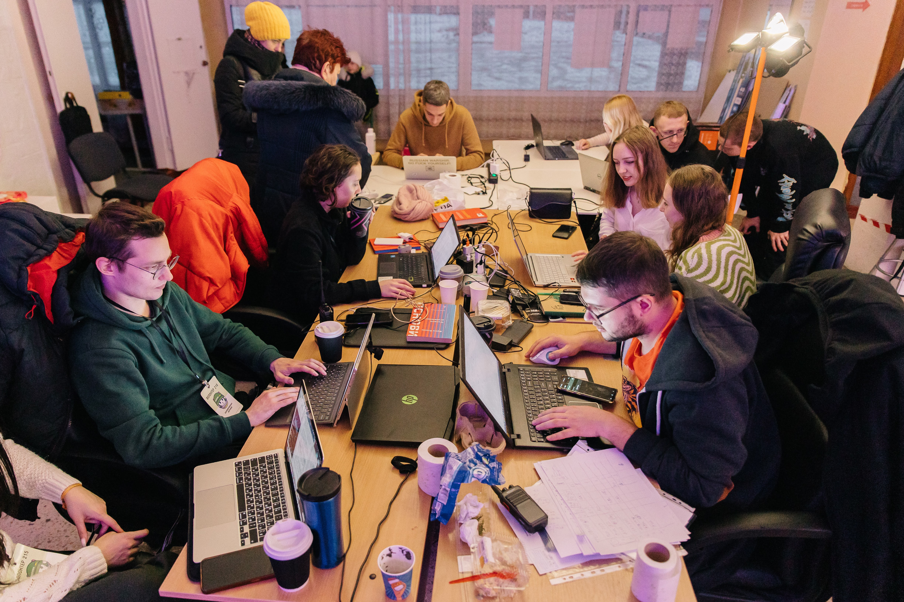
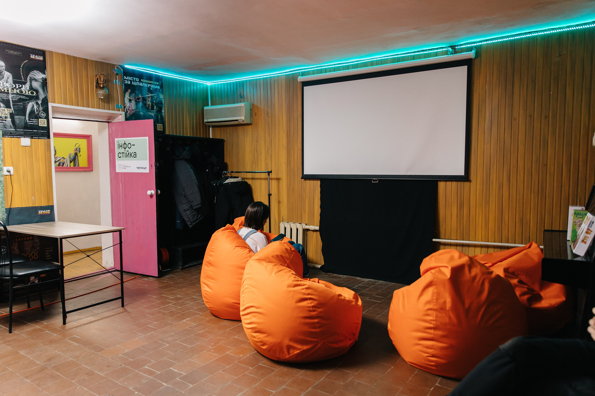
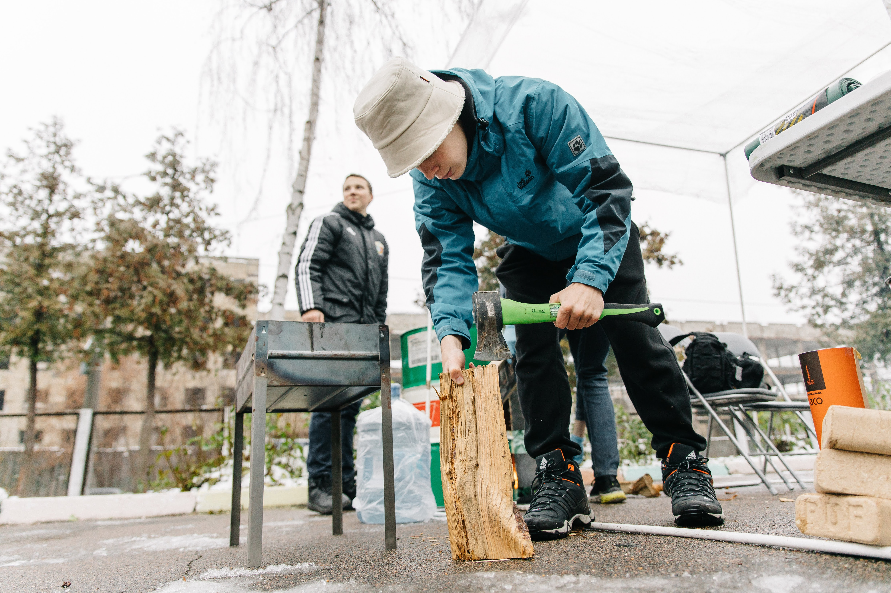
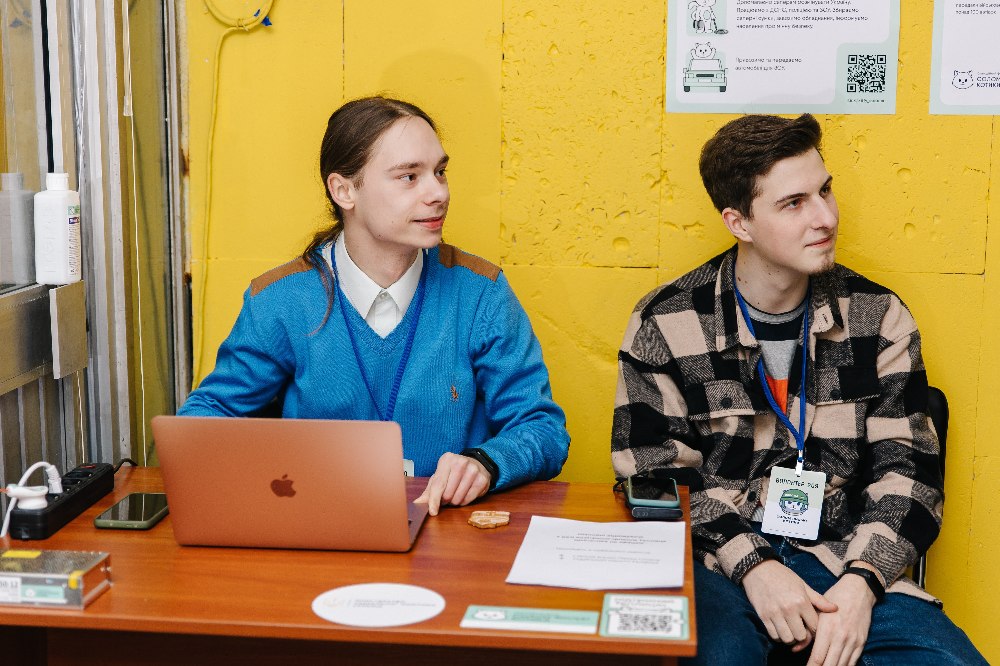
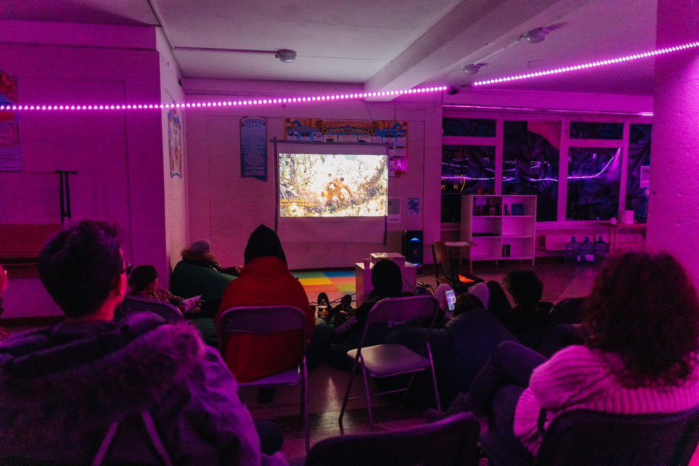

Теплиця
Наш досвід організації пунктів Незламності
Вступ
З жовтня минулого року росія вдалася до тероризму проти цивільних, атакуючи критичну інфраструктуру.
Упродовж опалювального сезону росіяни випустили понад 1200 ракет і дронів по ключових енергетичних об’єктах.
Почався блекаут.
Громадяни жили без світла, води, можливості приготувати поїсти, прочитати новини та переписуватись з близькими і рідними.
25 листопада ми одні з перших створили реально працюючий Пункт Незламності — Теплицю.
Що таке Теплиця?
Це Пункт Незламності здорової людини. Мало просто знести в одне приміщення генератор і старлінк — треба створити атмосферу та робити як для себе. За час існування, разом з партнерами ми відкрили 8 Теплиць.
В цих пунктах завжди є:
Статистика
За 5 місяців роботи проєкту:
 6077 відвідувачів
6077 відвідувачів
 5542 хвилини роботи генератора
5542 хвилини роботи генератора
 588 літрів пального
588 літрів пального
 2282 літри випитої води
2282 літри випитої води
 414 м² сплетено маскувальної сітки
414 м² сплетено маскувальної сітки
 230 книжок для буккросингу
230 книжок для буккросингу
 80 відвідувачів в середньому щоденно
80 відвідувачів в середньому щоденно
 573 відвідувача за один день
573 відвідувача за один день
 18 песиків, 1 котик та 1 криска
18 песиків, 1 котик та 1 криска
 70 волонтерів залучено
70 волонтерів залучено
Як організувати пункт незламності?
1. Простір
Пункт незламності можна організувати як в маленькому офісі, так і у великому холі супермаркету. Наш стандарт — це 2 м² на людину.
1.1 Зонування
Залежно від розміру приміщення і ваших можливостей може бути наступна конфігурація.
Інфостійка. Тут зустрічають, реєструють та розказують про Теплицю нашому відвідувачу. Для організації цієї зони потрібен стіл, стілець, ноутбук та відповідальний за зону — волонтер інфостійки. Перше враження гостя та наша з ним комунікація відбувається саме тут. Для реєстрації ми використовували гугл таблиці, де можна внести дані про відвідувачів, моніторити потік людей та робити загальний звіт за день. Під час реєстрації розповідаємо правила користування Теплиці.
Зона роботи та відпочинку. Тут можна працювати, навчатись та зарядити свій гаджет. Це може бути декілька столів, стільців, пуфів, де можна присісти та отримати електрику і тепло. Всі відвідувачі повинні мати змогу підзарядити телефон чи залишитись на довше. Важливо забезпечити цю зону достатньою кількістю подовжувачів. Також не забуваємо про тепло — декілька обігрівачів не будуть зайвими.
Дитяча зона. Нашими відвідувачами є не тільки дорослі, але й діти. Тому важливо організувати для них місце комфортного перебування та дозвілля. Для цього буде достатньо маленького столика, стільчиків, дитячих книжок, іграшок, штучного покриття на підлогу.
Чайна зона. Це місце з питною та гарячою водою, а також стаканчиками, серветками, чаєм та цукром. За можливістю, в цю зону можна додати смаколики.
Технічна зона. Це територія команди Теплиці, де зберігається необхідне майно для роботи Теплиці, можна скласти особисті речі, техніку тощо.
Туалет. Залежно від того, яку локацію ви обираєте, треба організувати туалет. Бажано вибирати приміщення, в якому вже є вбиральня та доступ до проточної води. Інший варіант — біотуалет на вулиці. Також потрібно слідкувати та поповнювати туалетну бумагу, щоб в Теплиці завжди були засоби для гігієни.
Активності. В організації зони активностей ви обмежені лише своєю уявою. Пам'ятайте, що не всі люди приходять для того, щоб зарядити гаджети. Декому просто необхідне живе спілкування або дозвілля. Далі ми наведемо приклади, як ми організовували зону активності на наших Пунктах Незламності.
1.2 Навігація
На етапі знайомства потрібно зорієнтувати відвідувача як організована Теплиця. Ми створили навігацію — це таблички та наліпки для робочої зони, розеток, чаю, бібліотеки, туалету, аптечки, вогнегасника, найблищого укриття тощо.
2. Обладнання
Для невеликої Теплиці вам мінімально необхідно:
- — генератор
- — старлінк
- — подовжувачі
- — прожектор
- — термопот
- — бочка для технічної води 40л
- — бочка для питної води 40л (з харчового пластику)
- — ємності для пального (необхідно постійно мати пальне для 1-2 днів автономної роботи Теплиці)
- — столи
- — стільці
- — вогнегасники
- — аптечка
- — сміттєві контейнери
Опціонально:
- — пледи
- — крісла-мішки
- — вішаки
- — книжкові полиці
- — біотуалет
!Важливо, щоб волонтери, які будуть користуватися і відповідати за майно, пройшли відповідне навчання.

3. Команда волонтерів
Для роботи Теплиці потрібна команда. Саме волонтери будуть комунікувати з відвідувачами, слідкувати за порядком, запускати інтернет, готувати чай, запускати генератор, вмикати обігрівачі тощо. Згідно моделі, яку ми напрацювали, найоптимальніше, коли на локації постійно є мінімум 3 людини. Це координатор та його помічники: волонтер інфостійки та технічний волонтер. Детальніше про кожного:
3.1. Координатор Теплиці.
Комунікація з відвідувачами, налагодження процесів, вирішення кризових ситуацій та звітність — це обов'язок та відповідальність координаторів. Основні обов’язки:
- — створити графік чергування на локації
- — слідкувати за чистотою і порядком
- — звітувати про вчасне відкриття і закриття Теплиці
- — подавати щоденний звіт про роботу Теплиці
- — замінювати волонтерів у випадку форс-мажорів
- — контролювати використання ресурсів
- — відповідати за майно Теплиці
- — слідкувати за роботою технічної частини і вчасним ремонтом
3.2. Технічний волонтер.
Існування Теплиці на 100% залежать від того, чи дійсно у нас є електрика, чи працює старлінк, чи немає бруду на локації, наявність кип'ятку для чаю, стаканчиків і цукру, щоб усі подовжувачі були на своїх місцях тощо. Техменеджер перевіряє і готує все до відкриття Теплиці на початку кожного дня. Особисто потрібно перевірити всі підключення, справність техніки, термопотів, лампи. Щонайменше кожні 20-30 хвилин потрібно робити обхід всіх зон.
3.3. Менеджер інфостійки.
Задача цього менеджера дуже відповідальна, бо за лічені секунди, а іноді навіть погляд, необхідно сформувати у відвідувача гарне враження. Треба познайомитись з гостем, розповісти про локацію і правила. Відвідувач має знати, що це за Пункт Незламності, хто за нього відповідає, як до вас звертатися, де взяти пароль від інтернету, чи можна підключити одразу всі пристрої до Старлінку, що робити під час повітряної тривоги і чи є у вас генератор, чи працює Теплиця цілодобово, чи є обмеження. Якщо відвідувач вперше — його необхідно зареєструвати. Комунікувати з гостями потрібно люб’язно та лояльно, щоб люди комфортно провели час та захотіли до нас повернутись.
4. Активності
Раніше ми обіцяли розповісти про активності в нас на Теплиці. Ми:
- — організували буккросинг українських книжок
- — плели маскувальну сітку
- — грали в настільні ігри: монополію, мафію, шахи, вікторину про Україну тощо
- — дивились фільми, футбол, Євробачення
- — проводили івент з домедичної допомоги та мінної безпеки
- — вакцинували домашніх улюбленців
- — організували стендап вечір
- — проводили науково-популярні лекції
- — прикрашали новорічну ялинку
Це все наповнює сенсами наші Теплиці і мотивує людей повертатися.
6. Безпека
У Теплицях команді та відвідувачам потрібно дотримуватись правил безпеки. Про ці правила треба обов’язково повідомляти відвідувачів, а ще ліпше — розмістити їх на видному місці. Волонтери повинні пройти інструктаж з протипожежної безпеки, знати правила поведінки в приміщенні та де знаходиться найблище укриття. В Теплиці обов’язково мають бути вогнегасники та аптечки. Відвідувачів зі своїми домашніми улюбленцями треба ознайомити з правилами знаходження в приміщенні з тваринами.
7. Комунікації
Про роботу Теплиці, всі новини та зміни, ми повідомляли людей в наших соцмережах. Крім того, маємо форму фідбеку, де можна відправити нам свій відгук, зауваження та пропозиції. Ми постійно вдосконалюємось та нам важлива думка наших відвідувачів.
Наші теплиці


Медіа про Теплиці
Про нас
Солом’янські котики — благодійний фонд, який заснований у квітні 2022 року.
Основні напрямки роботи — тактична медицина, гуманітарне розмінування та закупівля автівок для фронту.
Нині навчили такмеду та забезпечили якісними аптечками понад 16 тисяч захисників та захисниць. Допомагають обладнанням для розмінування державним органам (зокрема, Нацгвардії та ДСНС), а також навчають цивільне населення домедичної допомоги.